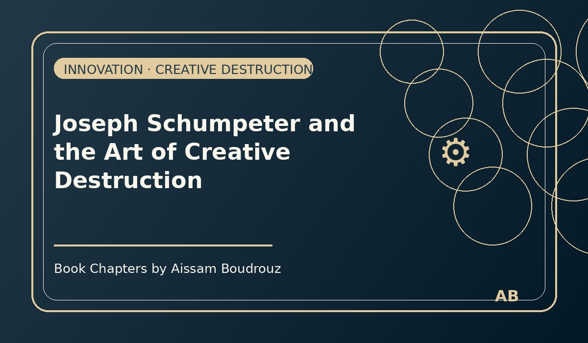

Joseph Schumpeter and the Art of Creative Destruction
It was one of those late nights when I couldn't sleep, so I started scrolling through old videos on my laptop — clips about the rise and fall of famous brands.
There it was: Nokia, the company that once ruled our pockets. Then DVD players, the kings of every living room. And of course, Polaroid, the camera that gave us instant magic long before Instagram existed.
Three names that once meant innovation. Three names that eventually disappeared.
As I watched, I couldn't help but think of Joseph Schumpeter, the economist who gave us one of the most beautiful — and brutal — concepts in economic history: Creative destruction.
When innovation becomes a storm
Schumpeter believed that the strength of capitalism doesn't come from stability — it comes from its ability to destroy itself and rebuild again.
He called innovation the true engine of the economy. Not prices, not competition, not even supply and demand — but the constant wave of new ideas that replaces the old.
Innovation, he said, is like a storm. It arrives suddenly, breaks what existed, and creates something better in its place.
That's what happened when smartphones appeared. Nokia, which once had nearly half the global phone market, couldn't keep up with Apple and Samsung. They didn't lose because their phones were too expensive — they lost because the game had changed.
When markets transform
The same story happened to DVDs when streaming appeared, and to Polaroid cameras when digital photography took over.
Each of these industries was once the future — until someone invented a new future.
That's the essence of Schumpeter's theory: every new wave of innovation destroys something — and through that destruction, the economy grows stronger.
It's painful for companies, workers, and investors in the short term, but it's also what keeps capitalism alive.
Without innovation, there's no renewal. Without renewal, everything stops.
The human side of the storm
Of course, Schumpeter also knew this "creative destruction" had a price.
When new technologies emerge, workers in old industries lose their jobs. Factories close, skills become outdated, and fear spreads.
But he also believed this pain was temporary. Because those same workers — once unemployed — eventually find new opportunities in the new sectors that innovation creates.
The challenge, he said, is not to stop innovation, but to help people survive its transition.
That's where the state comes in — not to block progress, but to make sure everyone can move with it. To support small companies, encourage research, and protect consumers from prices that grow too fast.
Between destruction and hope
As I closed my laptop that night, I thought of all the "Nokias" we've seen — not just companies, but ideas, habits, and even people who couldn't adapt fast enough.
Maybe that's what Schumpeter was trying to tell us: that progress always has a human cost, but it's also what keeps the story of humanity moving forward.
Innovation destroys, yes — but it also creates new paths, new dreams, new jobs, and new lives.
So, if one day you see your favorite brand disappear, don't be sad. Maybe it's just making space for the next revolution. 💡📱
← Back to Articles